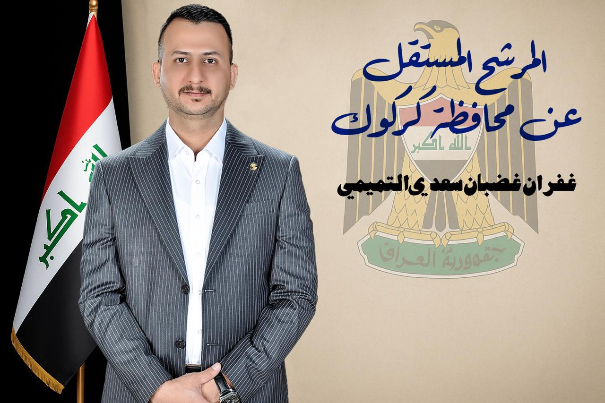

النبذة عني
الممرض الجامعي غفران غضبان سعدي التميمي، مرشح مستقل لانتخابات مجلس النواب العراقي - الدورة السادسة عن محافظة كركوك، رقم القائمة 292.
برنامجي الانتخابي
برنامجي الانتخابي يقوم على ثلاثة محاور أساسية:
- المحور الأول: المواطن وكرامته، عبر العمل على تشريع القوانين التي تمس حياة الناس اليومية وتحسين واقعهم المعيشي، وضمان المساواة بين جميع المواطنين دون أي تمييز أو تفريق.
- المحور الثاني: مراقبة تنفيذ القوانين المشرعة سابقًا أو التي ستُشرّع مستقبلًا، بما يضمن أن تحقق أهدافها في خدمة المصلحة العامة، لا أن تبقى حبرًا على ورق.
- المحور الثالث: المؤسسات الصحية والخدمات المقدمة للمواطنين، من خلال تطوير بيئتها وتحسين أدائها، مع إعطاء اهتمام خاص للملاكات التمريضية والصحية، بحكم عملي وخبرتي في هذا القطاع.